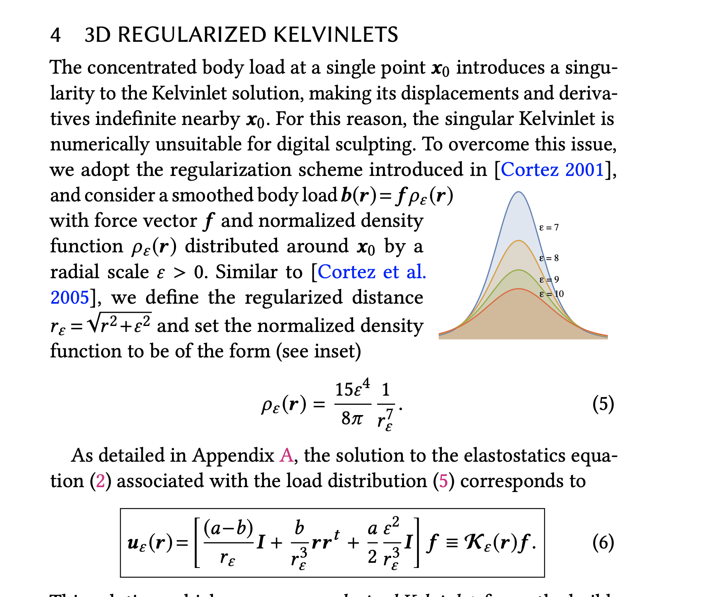
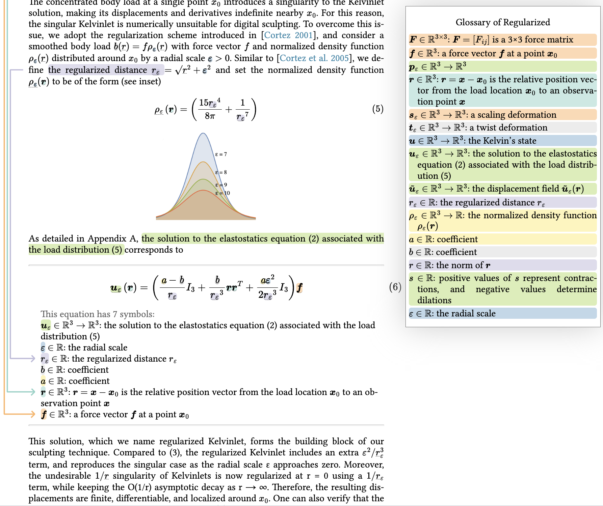

Regularized Kelvinlets Sculpting Brushes based on Fundamental Solutions of Elasticity
Fernando de Goes and Doug L. James
SIGGRAPH North America 2017
H❤️rtDown source
(entire paper)
H❤️rtDown-generated code libraries
Existing implementation
source code
before modification
and
modified to call H❤️rtDown-generated code
Original Paper [PDF]
H❤️rtDown Paper Viewer

